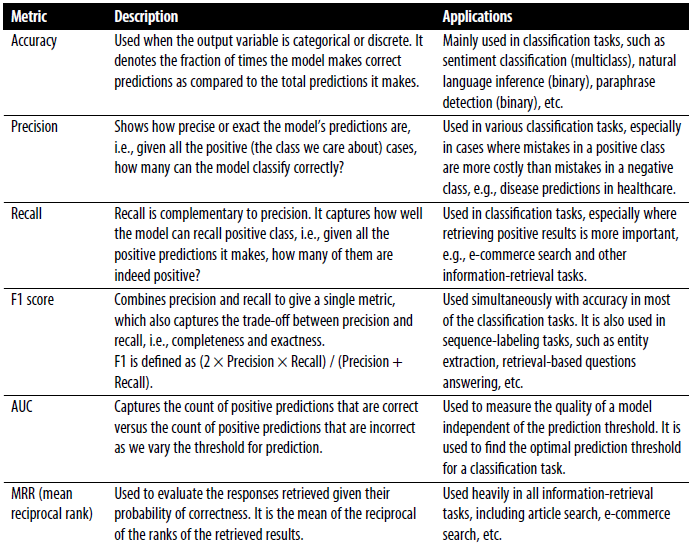
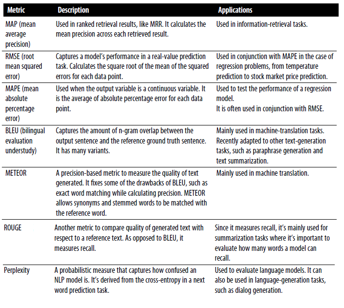

3.3 Evaluation
Intrinsic versus extrinsic tests, and precision, recall, and F1.
1. Two kinds of evaluation
A spam filter can be scored in two different rooms.
Intrinsic evaluation scores the NLP module on a held-out set with labels. Precision, recall, F1, accuracy. The AI team can compute these without waiting on the rest of the company.
Extrinsic evaluation scores the product outcome. How much time did people waste because spam landed in the inbox, or a real message landed in junk?
Intrinsic is cheaper and faster. It is a proxy. You run it first and often. You go to extrinsic only when intrinsic numbers are stably good. Bad intrinsic almost always means bad extrinsic. Good intrinsic does not guarantee a good product — that is why the second measurement exists.
Stakeholders outside the AI team usually own extrinsic numbers. That is another reason to keep intrinsic in-house and current.
2. The confusion matrix
For a binary task, every test example falls in one cell.
| Predicted positive | Predicted negative | |
|---|---|---|
| Actually positive | true positive (TP) | false negative (FN) |
| Actually negative | false positive (FP) | true negative (TN) |
Spam as the positive class: TP is junk you caught, FP is a real email you buried, FN is junk you missed.


3. Metrics you will compute
Let (P) be “predicted positive” and (T) be “actually positive.”
| Metric | Formula | Reads as |
|---|---|---|
| Accuracy | ((\mathrm{TP}+\mathrm{TN})/N) | Overall fraction correct |
| Precision | (\mathrm{TP}/(\mathrm{TP}+\mathrm{FP})) | Of what you flagged, how much was right |
| Recall | (\mathrm{TP}/(\mathrm{TP}+\mathrm{FN})) | Of what was truly positive, how much you caught |
| F1 | (2\cdot\mathrm{prec}\cdot\mathrm{rec}/(\mathrm{prec}+\mathrm{rec})) | Harmonic mean; punishes a large gap |
Accuracy is a poor headline when classes are unbalanced. A filter that never predicts spam is 98% accurate if 2% of mail is spam, and it is useless.
Precision-heavy tasks: you cannot afford false alarms (legal hold, medical alert). Recall-heavy tasks: you cannot afford misses (cancer mention, fraud). F1 is the compromise when both matter and you need one number.
For more than two classes, compute precision/recall/F1 per class, then macro-average (each class equal) or micro-average (each example equal). Say which one you report.
4. How to run it so it means something
- Hold out a test set you do not tune on. Use a validation split or cross-validation for decisions.
- Keep the same pre-processing on train and test (note 2.3).
- Look at errors, not only the scalar. A confusion matrix and a few false positives/negatives tell you whether to change features or labels.
- If one country, language, or product line is systematically worse, that is a data problem (note 2.1), not a reason to report only the average.
Lab 3 asks for accuracy, precision, recall, F1, and one extrinsic-style check (hard errors, a matrix, or a slice).
5. Beyond a single F1
A ranking or retrieval system needs precision@k or recall@k, not document-level F1. Generation (summary, translation) needs overlap or human ratings; that is later in the course.
For classification this week, also look at:
- threshold: moving it trades precision for recall. Plot both if the product can choose a cutoff.
- calibration: a score of 0.9 should be right about 90% of the time if someone will use the number as a probability.
- slices: F1 on the whole test set can hide a language or a country that is failing.
Those are still intrinsic. Extrinsic is “did the queue get shorter” or “did people open the email.” Do not call a prettier confusion matrix extrinsic.
6. Practice
-
A spam model: TP 80, FP 20, FN 20, TN 880. Compute precision, recall, accuracy. Which number would you show a user who is angry about lost mail?
-
Why is F1 closer to the worse of precision and recall, not the average?
-
You raise recall on toxic-comment detection and precision collapses. What did you probably do to the threshold, and what extrinsic cost did you just buy?